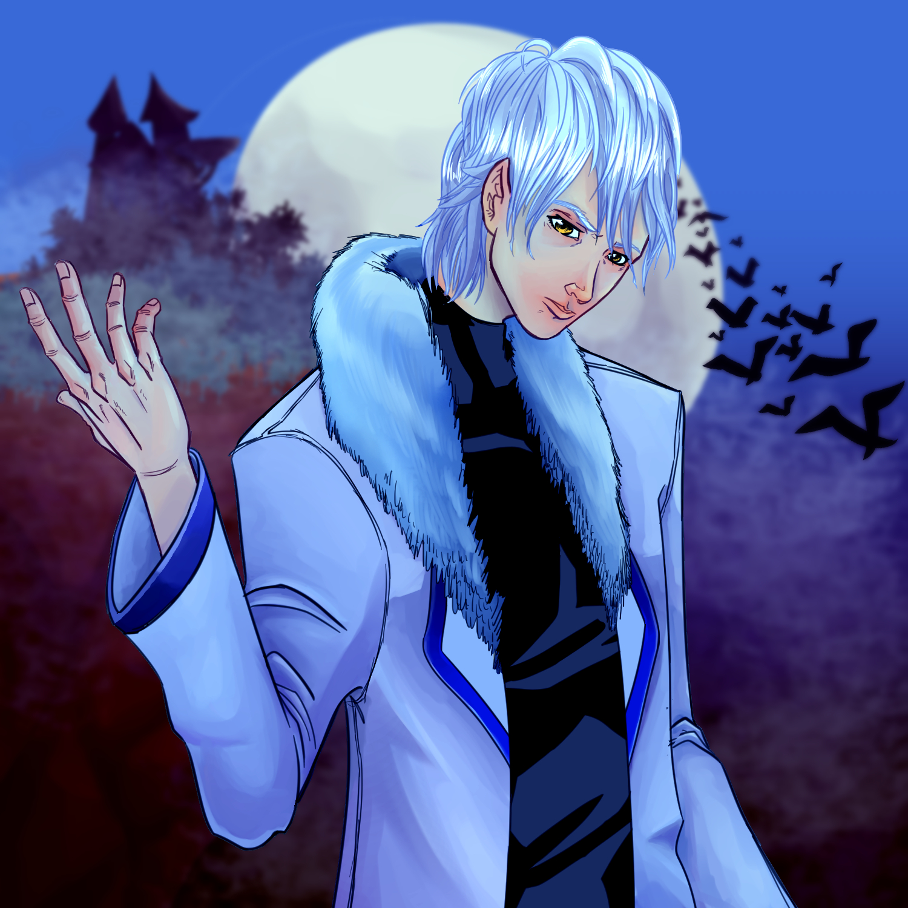
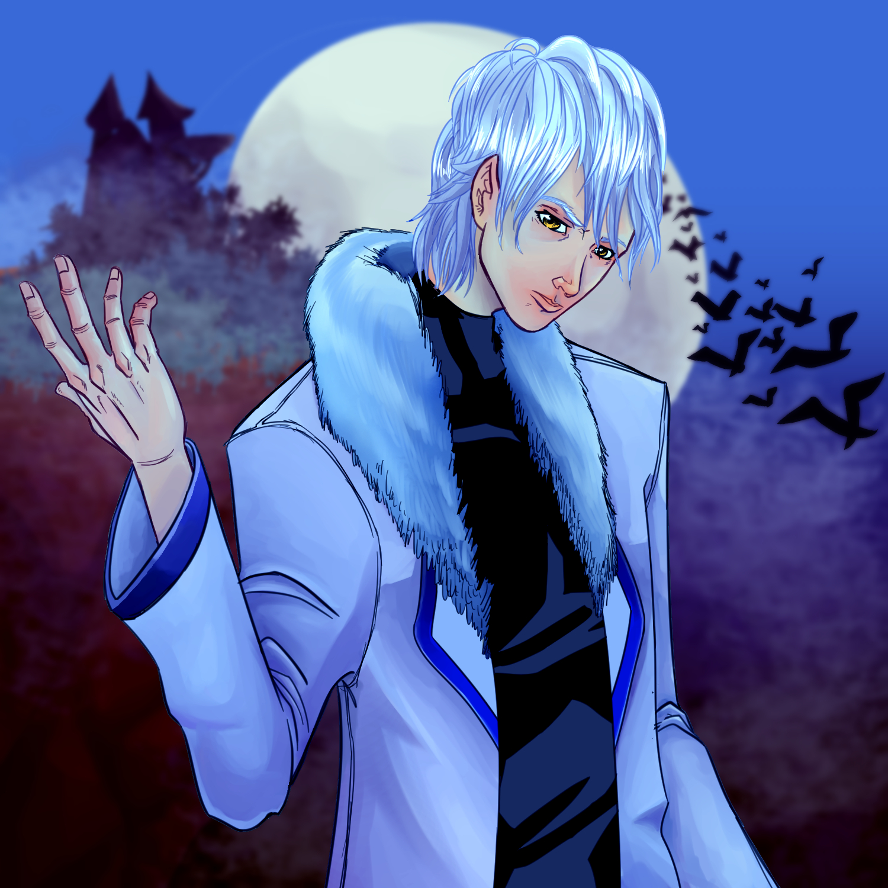
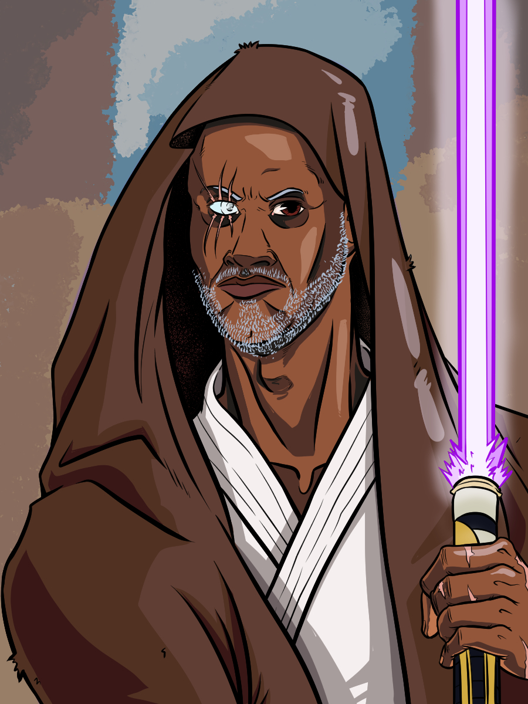
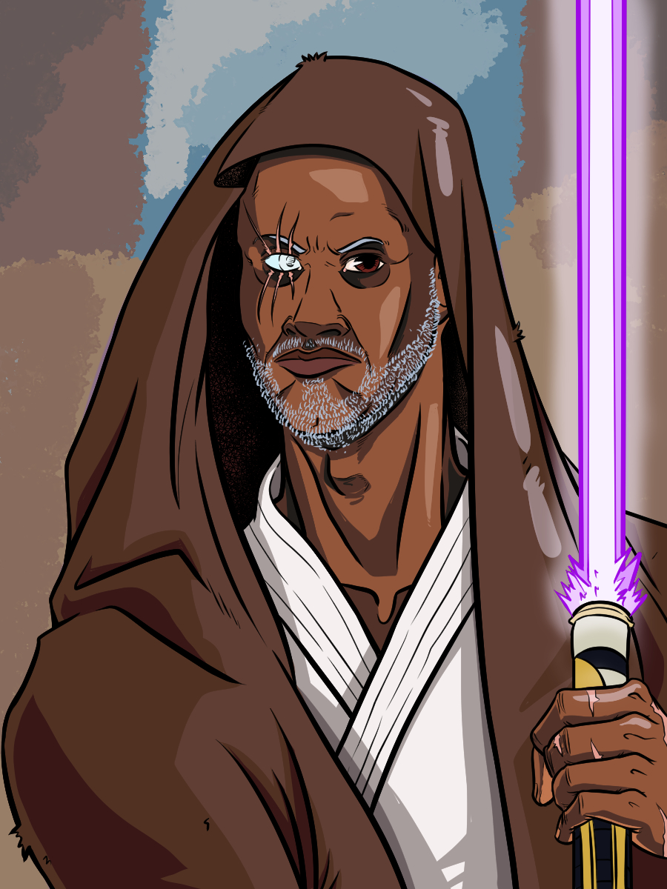
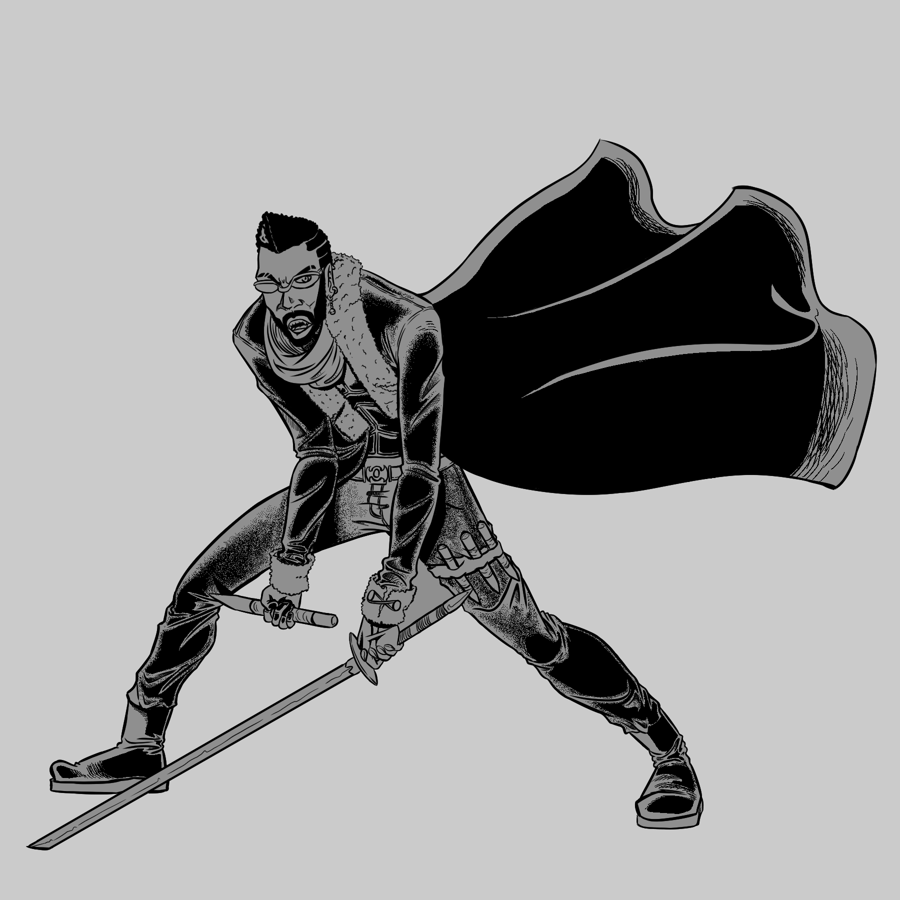
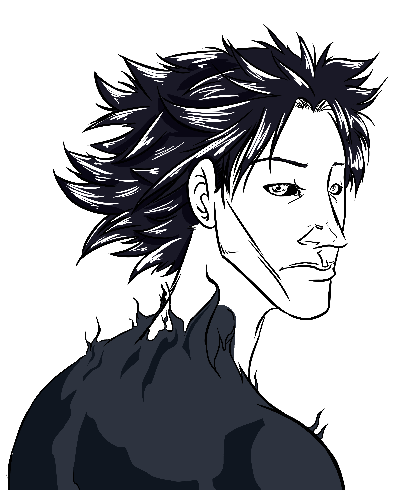
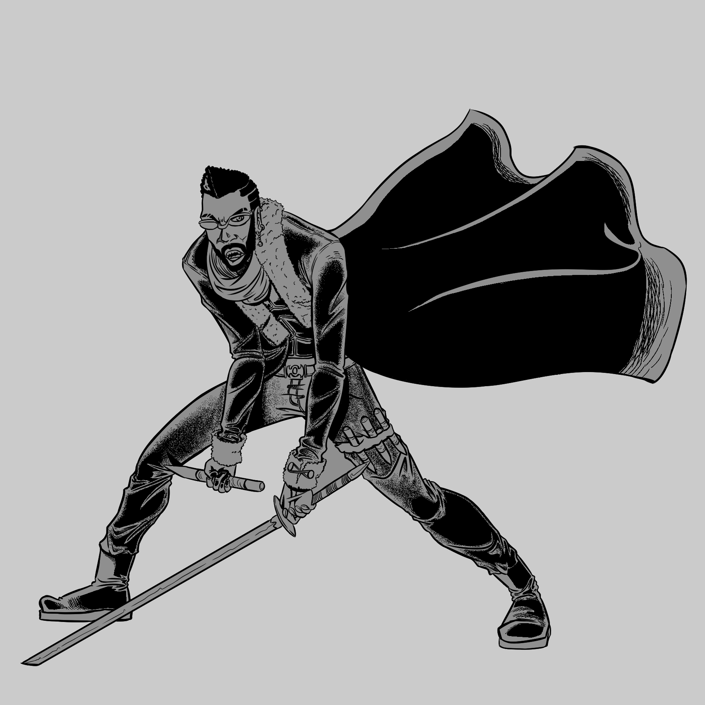
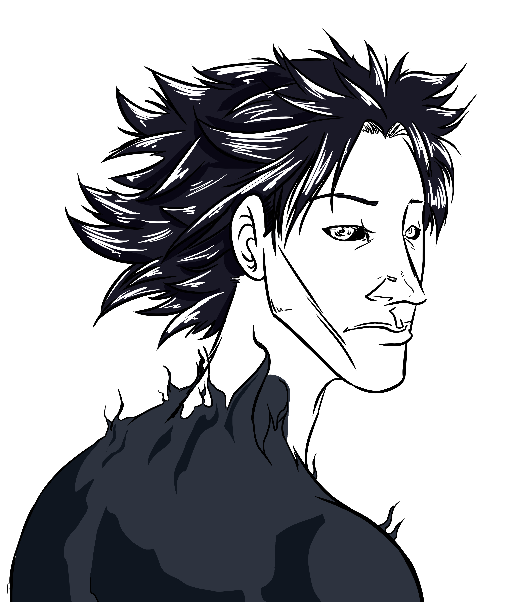

Below, you'll find a selection of various pieces I
completed in 2021 and some 2022 work-in-progress
pieces.
If you hover over an image, you will get a full view
of that image. If the art is a color piece, it will
even shift into it's real colors!
Try it out!!

 

 

 


